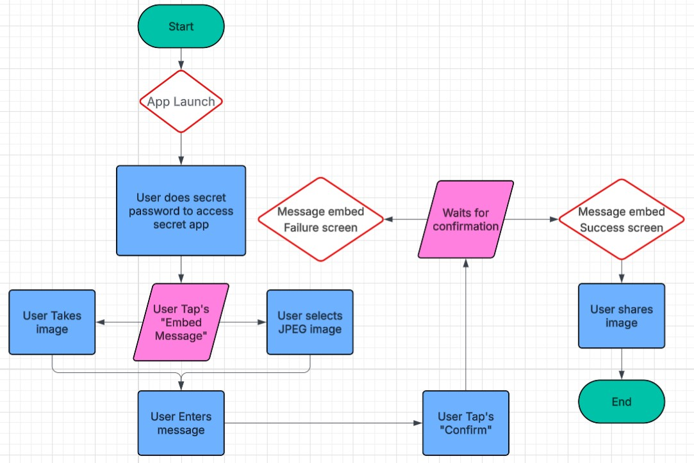
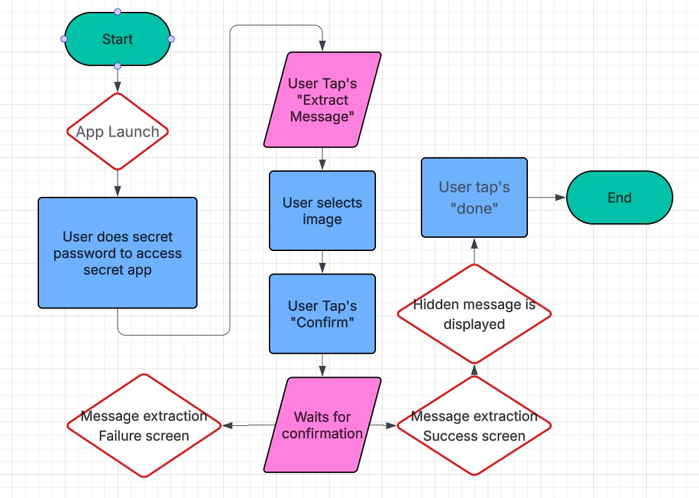

User Story: As an operator, I want to embed short messages inside reconnaissance images.
User Story: As a command center analyst, I want to extract hidden messages received from reconnaissance missions.
User Story: As a deployed agent, I want the system to run on my handheld Android phone.
User Story: As an operator trainer, I want an easy-to-use interface so agents can quickly learn the system.
Our application supports two primary user scenarios: embedding a hidden message into an image and extracting a hidden message from an image. The diagrams below illustrate both workflows.

Operator launches app, performs the gesture-based access trigger, selects the embed option, chooses or captures an image, enters a secret message, confirms the action, and shares the encoded image.

Analyst launches app, performs the gesture-based access trigger, selects the extract option, chooses an image, confirms the action, reads the recovered hidden message, and completes the process.
The following embedded Figma prototype demonstrates the planned user interface and interaction flow for Hidden In Plain Sight. Click the Star icon in the left corner 5 times, and enter 1337 to access the hidden prototype features!